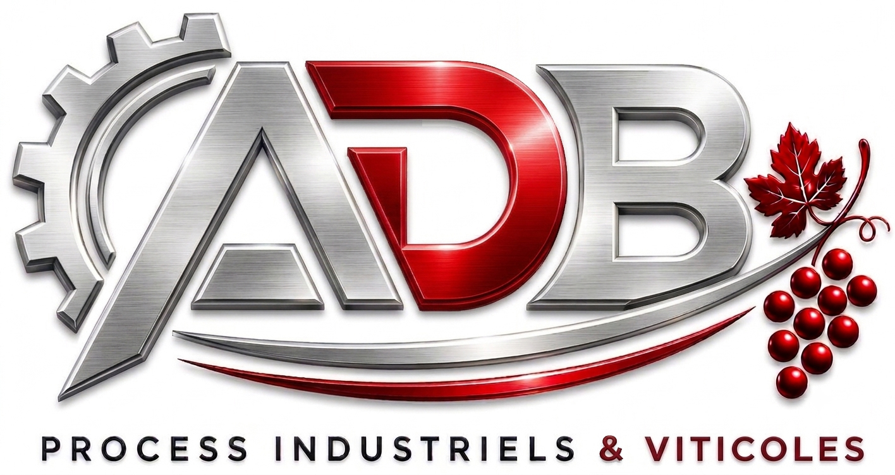

Changements de moteurs, remueurs, mise en route et hivernage des systèmes de chargement de pressoirs.
Remplacement complet de moteurs sur vos installations industrielles et viticoles. Diagnostic, démontage, installation et réglages pour garantir une performance optimale.
Entretien, réparation et optimisation des remueurs pour les caves champenoises. Expertise spécifique sur les cycles, les automatismes et les systèmes de rotation.
Mise en route complète de vos installations avant vendanges ou périodes de production. Vérification des convoyeurs, pressoirs, pompes, moteurs, automates et systèmes de sécurité.
Hivernage complet des systèmes de chargement de pressoirs, convoyeurs et équipements associés. Protection contre l’usure, nettoyage, graissage, vidange et sécurisation des installations.
Dépannage express en cas de panne ou arrêt de production. Intervention sur site en Champagne et régions voisines.
Analyse de vos installations, optimisation des cycles, réduction des pannes et amélioration de la performance globale.